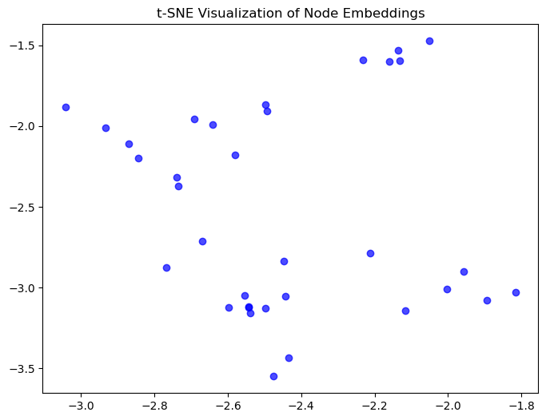

Chapter 4: Node Embeddings in Graph Machine Learning#
This notebook covers the theory, mathematical foundations, and practical implementation of node embeddings using DeepWalk and Node2Vec.
# Import necessary libraries
import networkx as nx
import numpy as np
from node2vec import Node2Vec
import matplotlib.pyplot as plt
from sklearn.manifold import TSNE
# Create a sample graph
G = nx.karate_club_graph()
# Generate node embeddings using Node2Vec
node2vec = Node2Vec(G, dimensions=64, walk_length=30, num_walks=200, workers=4)
model = node2vec.fit(window=10, min_count=1, batch_words=4)
# Extract embeddings
embeddings = np.array([model.wv[str(node)] for node in G.nodes()])
# Visualize embeddings using t-SNE
tsne = TSNE(n_components=2, random_state=42)
embeddings_2d = tsne.fit_transform(embeddings)
plt.figure(figsize=(8, 6))
plt.scatter(embeddings_2d[:, 0], embeddings_2d[:, 1], c='blue', alpha=0.7)
plt.title('t-SNE Visualization of Node Embeddings')
plt.show()
